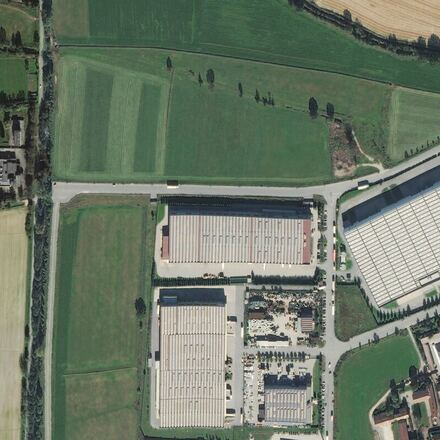
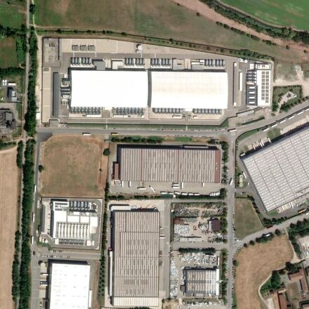
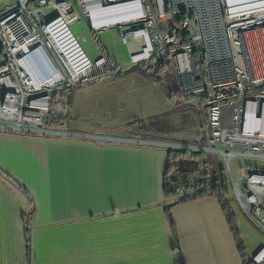
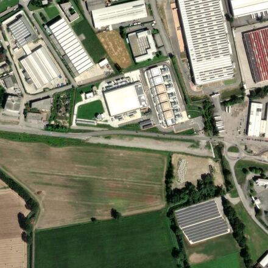
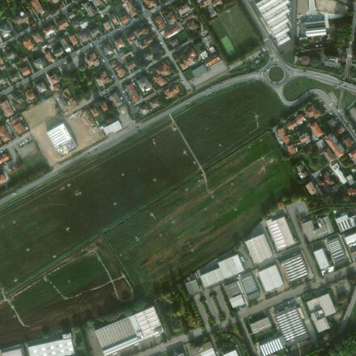
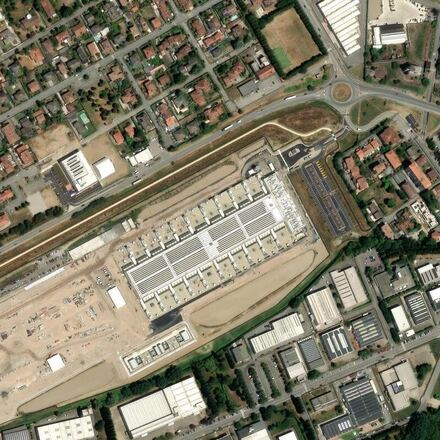
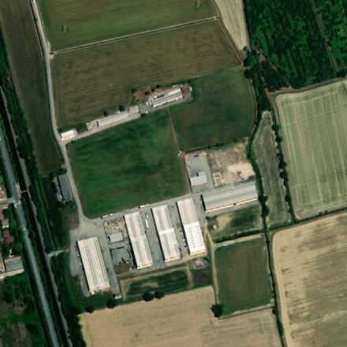
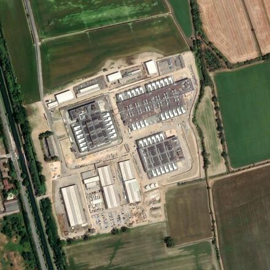

I data center in Italia, accesi e in arrivo
Ogni cerchio è un data center (o un campus), grande quanto la potenza dichiarata. I progetti annunciati valgono volte la potenza accesa oggi, e la crescita si concentra tra il sud di Milano e il Pavese. Con l'anello verde i 10 impianti costruiti su campi o terreni incolti.
Passa sopra un cerchio (o toccalo) per i dettagli. Per ingrandire: + e −, due dita sul telefono o Ctrl e rotellina, poi trascina.
Prima i campi, poi i data center
Quattro dei 10 impianti costruiti su suolo agricolo o incolto, tutti tra il sud di Milano e il Pavese. Stessa inquadratura, prima e dopo il cantiere.
STACK MIL1A e MIL2, Siziano (PV)
Campo fino al 2014, primo edificio nel 2016, altri nel 2021-2022. I data center sono l'edificio grande in alto e quelli in basso a sinistra, tutti su terreno che nel 2014 era campo.


Microsoft, Settala (MI)
Campo fino al 2020, cantiere nel 2022.


Compass MXP-I, Noviglio (MI)
Campo fino al 2022, cantiere dal 2024.


STACK MIL04, Vellezzo Bellini (PV)
Pioppeto e campo fino al 2022, cantiere dal 2023, accanto a capannoni agricoli già esistenti.


Immagini: Esri World Imagery Wayback (Maxar e altri). Datazione incrociata con la Carta nazionale del consumo di suolo di ISPRA.
Quanto consumeranno, a seconda di quanti progetti si fanno
Nessuno sa quanti dei progetti annunciati diventeranno data center veri. Scegli una quota con il cursore: il grafico mostra il consumo di elettricità stimato di tutti i data center italiani, con la forchetta di incertezza.
La linea è la stima centrale, la fascia contiene 9 simulazioni su 10. La linea tratteggiata è il consumo di oggi. I cantieri già aperti si contano sempre (realizzati all'80-100%).
Dati: Datacentermap (uso autorizzato) per posizione, fase e potenza; ISPRA, Carta nazionale del consumo di suolo 2006-2024 (CC BY 4.0), e ortofoto storiche (Esri World Imagery Wayback) per il suolo. Consumi: stima dalla potenza dichiarata con carico tra 40 e 80%, impianti tra +20 e +50%, cantieri realizzati all'80-100%, progetti al 20-60% (mediana di simulazioni). Elaborazione di David Ruffini, davidruffini.com. Anteprima non pubblicata.